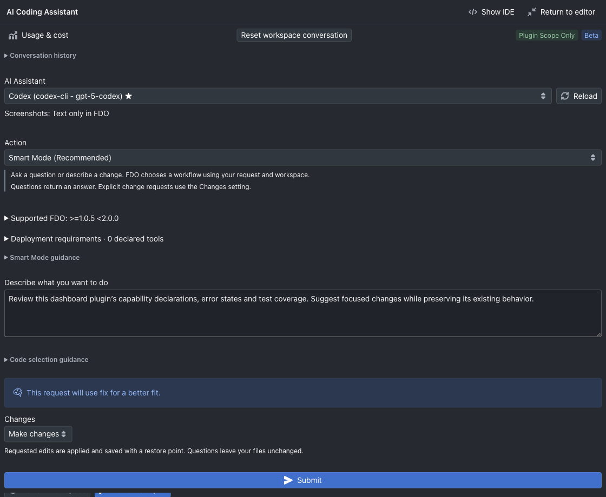

FDO / AI CODING ASSISTANT
AI coding.
Your way of working.
Build and refine FDO plugins with SDK-aware AI assistance. Extend a Codex coding assistant with reusable Skills, selected MCP tools and lifecycle Hooks—all configured inside FDO.
Packaged FDO includes the Codex CLI runtime. You do not need to install a separate Codex CLI to use the integrated coding assistant. Configure and sign in to your Codex assistant in FDO; your provider’s account access and usage terms still apply.
Skills, MCP and Hooks are currently supported for Codex coding assistants.
AI assistance in the plugin workspace.
Ask for help creating, changing, explaining or repairing plugin code. FDO supplies SDK and host compatibility context so the assistant can work with the plugin APIs and target versions in your workspace. Review changes, run the plugin’s tests and keep snapshots before you deploy.
Codex is available as a coding assistant in FDO. The extension features below apply to that integration; they are not a claim that every AI provider supports the same extensions. AI provider access and any external service costs are separate from the FDO desktop application.
Read the AI coding workflow ↗ · Keep workspace restore points
01 / REUSABLE INSTRUCTIONS
Skills: carry your conventions into a request.
Import a SKILL.md with a name and description in YAML
front matter. Assign it to one or more saved Codex coding assistants
and enable it. Use skills for team conventions, review checklists or
repeatable authoring guidance.
The assistant initially sees the skill’s name and description. Full
instructions load for an explicit $skill-name mention or
when requested for the current step. This keeps reusable guidance
available without inserting every skill’s full contents into every
request.
---
name: plugin-review
description: Review FDO plugin changes against our team checklist.
---
Check capability declarations, UI error states and observable tests.
Keep credentials outside plugin source.Instruction-only import: FDO stores a copy of the SKILL.md file. Scripts, reference folders, MCP connections and Hooks are not imported with it. Configure MCP and Hooks separately. Imported extension skills are also separate from the plugin workspace’s generated SKILL.md implementation guide.
02 / CONNECTED TOOLS
MCP: give Codex the tools you select.
Connect a remote HTTP MCP server or a local command server using stdio. Discover its tools, select the tools you allow, assign the server to saved Codex coding assistants, then enable it and save its permissions. Changes take effect on the next request.
- HTTP: remote endpoints use HTTPS; local development endpoints can use loopback HTTP. All three authentication modes are supported: unauthenticated access, bearer-token authentication, and OAuth browser sign-in. You can also configure custom headers.
- Command / stdio: supply an installed executable, literal arguments and any required environment values. Install that MCP server and its runtime separately—the bundled Codex CLI does not include arbitrary MCP servers.
- Permissions: FDO filters the tool catalog and rejects calls to unselected tools. Saving permissions authorizes selected tools to run during coding requests without a separate prompt for every call.
Choose trusted servers: selected tools can send task context to a service and perform real actions. AI Progress shows actual MCP call lifecycle events. Checking a connection discovers tools; it does not execute those tools.
03 / LIFECYCLE AUTOMATION
Hooks: add your own lifecycle commands.
Configure trusted commands for supported Codex lifecycle events, such as SessionStart, UserPromptSubmit, PreToolUse, PostToolUse and Stop. Assign each Hook to saved Codex coding assistants, enable it and save the assignments. New Hooks start disabled and unassigned.
A Hook receives an event JSON object on stdin and can return the supported native Hook response. For example, a UserPromptSubmit Hook can add a concise team review reminder. Supported pre-operation responses can block an operation; a PostToolUse Hook cannot undo a completed action.
Hook scripts and runtimes must be installed separately. Commands run with your user permissions as explicitly configured trusted processes. Avoid returning secrets: Hook stdout may become assistant context. FDO’s Codex shell tools remain disabled; enabling a Hook does not give the model arbitrary shell access.
Hook tests can have real side effects. Event behavior depends on the lifecycle event; do not rely on Hooks for mandatory cleanup or guaranteed enforcement. See the runtime guide for tested events, platform-validation status and cancellation limits.
Set up the assistant once.
Choose its extensions deliberately.
- Open Settings → AI Assistants, add a Codex coding assistant and complete its sign-in/configuration. FDO uses its bundled Codex CLI.
- Open Settings → AI Extensions → Codex. Choose Skills, MCP Tools or Hooks.
- Import or configure an extension, select its saved Codex assistants, and enable it. Save assignments or tool permissions before starting the next coding request.
- In the plugin editor, open AI Coding Agent and select the assigned assistant. Mention an imported skill explicitly when you want that workflow, or request work using an allowed MCP tool.
- Review the result in the workspace, inspect AI Progress where relevant, and run tests before deployment.
FDO uses extensions explicitly configured and assigned inside FDO; do not assume your global Codex setup is imported. The built-in Codex runtime, extension permissions, external tool installation and provider sign-in are distinct pieces of setup.